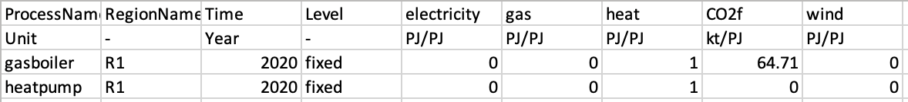

In this mini-lecture we will learn about the input and output commodities within MUSE. Specifically we will learn what the CommIn.csv and CommOut.csv files do and how these relate to the energy system.
Input commodities are the commodities consumed by each technology. This could be coal for a coal power plant, uranium for a nuclear power plant or electricity for an electric heater. This is dependent on the technology, and some technologies can have multiple inputs.
Output commodities are similar, but are the outputs of technologies. For example the output of any power plant will be electricity, and for heaters the output will be heat. Again, this is dependent on the technology, and some technologies can have multiple outputs such as combined heat and power plants.
The ratio between these two parameters is very important in MUSE and in energy modelling in general. This is because it defines the efficiency of the technology. For instance, if a coal power plant requires 1 PJ of energy stored in coal to output 0.8 PJ of electricity, the coal power plant has an efficiency of 0.8. The higher the efficiency the more economical the power plant is and the more competitive it will be when compared to different technologies.
Within MUSE there are two files which one should change to edit these parameters: the CommIn.csv and CommOut.csv files. These files are found within the sector folders of the case study. For instance, in the power/CommIn.csv or gas/CommOut.csv directories.
In this example we will look at the residential sectors CommIn.csv and CommOut.csv files. An example CommIn.csv file can be seen in the figure below:
Figure 5.3.1: CommIn file for the residential sector
Here we see two technologies: gasboiler and heatpump. They are both in region R1 and we are specifying the characteristics for the year 2020. The gasboiler only requires gas, but requires 1.16 PJ, whereas the heatpump requires only 0.4 PJ to produce some energy.
However, it is important to note that these figures are meaningless without the CommOut.csv file. We need to know how much energy does the 1.16 PJ of energy produce in the gasboiler? As can be seen in the figure below showing an example CommOut.csv file, it is convention to select an output of 1. That way we only have to vary the CommIn.csv to change the efficiencies consistently.

Figure 5.3.1: CommOut file for the residential sector
Therefore, we can now conclude that the heatpump is much more efficient than the gasboiler as only 0.4 PJ are required to output 1 PJ of heat. If we divide 1 by 0.4, we get the efficiency of the heatpump, where 1/0.4= 2.5. Notice that the gasboiler also outputs carbon dioxide. It is important to take these emissions into account to have a complete understanding of the energy system. MUSE calculates these emissions endogenously.
This mini-lecture has explored the input and output commodities in MUSE. We have learnt that the CommIn.csv and CommOut.csv files relate to efficiencies when brought together in a ratio.